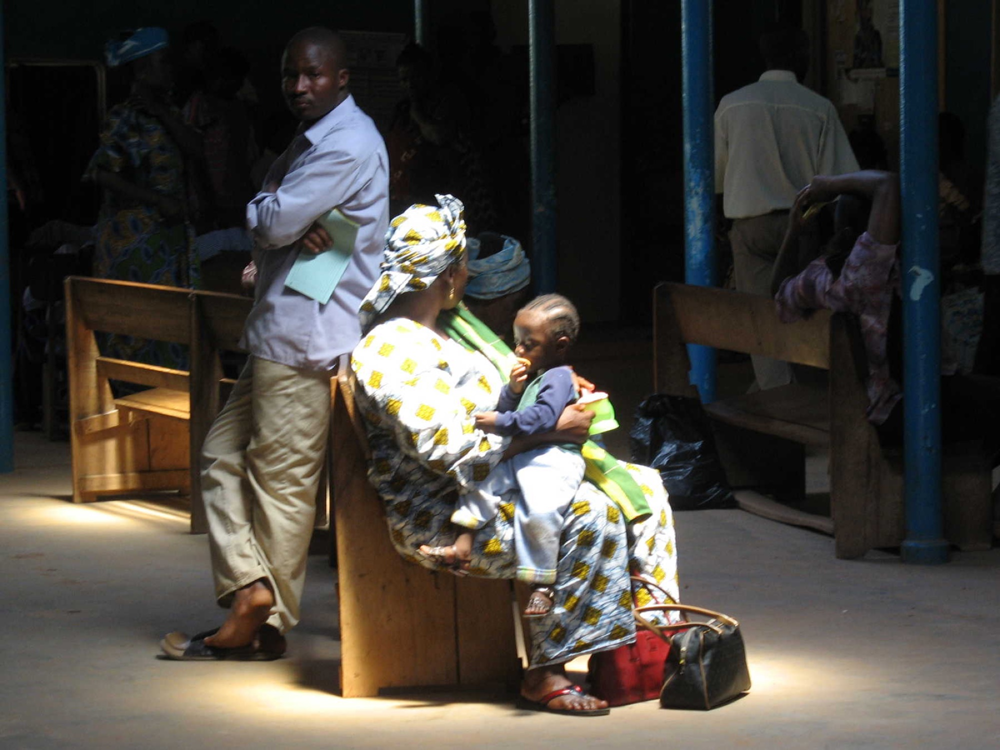

The maternal safety layer for the mothers the health system reaches too late.
The companion builds trust every week. The safety layer acts when something may be wrong.
Live on TelegramWhatsApp in verificationapp.bumply.momLagos, Nigeria
Photograph: DFID / UK Aid, Nigeria. CC BY-SA 2.0.

BumplyThe problem
The problem
She can need urgent help long before she reaches a facility.
When a mother writes that she is bleeding heavily, she does not need another article.
She needs someone to recognise danger and help her reach care.
RecognitionEscalationArrival
Photograph: Mother and child waiting in clinic, CC BY 3.0, via Wikimedia Commons.
BumplyThe data
The data
One country. A fifth of the world's loss.
75,000
mothers died in 2023
a WHO estimate, not a register count
993
deaths per 100,000 births
the world's highest ratio
28.7%
of all maternal deaths, globally
from 2.6% of world population
1 in 25
lifetime risk, a 15-year-old girl
in Norway, 1 in 60,475
One in five deaths of a Nigerian woman of reproductive age is a maternal death.
WHO/UNICEF/UNFPA/World Bank/UNDESA, Trends in maternal mortality 2000–2023 (2025), §4.1.1 and Annex 4. Globally 712 mothers die every day, one every two minutes.
BumplyThe care gap
The care gap
She is not refusing care.
1
Recognition. Fewer than a third can name three danger signs.
2
Escalation. A serious message often gets no rapid action.
3
Arrival. 47% cannot find the money. Most bleeding deaths happen after delivery.
3M+
births a year to Nigerian women who cannot reliably read a text message
Only 30% own a smartphone. An English, text-only app is built for a woman who is
not the one dying.
Nigeria Demographic and Health Survey 2023-24 (NPC & ICF, 2024), Tables 9.27, 15.7.1, 3.3.1 · Doctor HV et al., J Health Care Poor Underserved 2013 · Cresswell JA et al., Lancet Glob Health 2025. Births-affected figure derived from 7.55M live births × 43% illiteracy.
BumplyThe solution
The solution
She already has WhatsApp.
Bumply turns an ordinary message into a safety pathway. It reads every message for danger,
then pulls in a human.
No download, no formShe texts a number and she is enrolled.
Five languages, by voiceEnglish, Pidgin, Yorùbá, Hausa, Igbo.
A human closes the loopNever the model alone.
Bumply · online
i dey see plenty blood
🚨 Blessing, this can be very serious. Abeg, GO to the nearest hospital NOW.
🚗 Alerting Musa (0803…) to carry you now.
📋 Show this code at the clinic: BMP-4KX9
Bumply supports earlier recognition and care navigation. It does not replace a clinician or provide emergency medical treatment.
BumplyInside the product
Companion plus safety
Her anatomy, her baby, her week.
What is happening inside her
Clinical illustration, drawn for Nigerian mothers
Her baby, this week
Rendered week by week to 40
Bumply · online
Wetin dey happen for week 26?
Your pikin don reach about 35cm now. E fit hear your voice.
Voice note · 0:12
🎤 Voice note · 0:06
In her own words
Typed or spoken, any of five languages
Weekly meal plans, partner notes and milestones keep her here. The safety layer is why it matters.
LIVE PRODUCT · SOUND OFF
BumplyAI native
AI native, on every surface
Same brain, three doors. Only one of them needs a network.
Capability
Telegram her first door
Web & Android installed app
Where the model runs
Danger detection
✓
✓ offline too
No model at all. Deterministic code.
Grounded chat
✓
✓
Our GPUs, scale to zero
Voice in and out
✓
✓
SoroTTS + Whisper, self-hosted
Photo triage
✓
✓
Our GPUs
Chat with zero signal
✕
✓
SmolLM2 135M, in the browser
Speech with zero signal
✕
✓
Whisper tiny, in the browser
Read a card with zero signal
✕
✓
SmolVLM 256M, in the browser
The part that never depends on a model
Danger screening is deterministic and runs first on every surface, including offline.
Speech models get African accents wrong about a third of the time, so safety never rests on a transcript.
Honest scope
The three in-browser models are opt-in, about 100MB once, cached after that.
They are a companion for when signal fails, not a diagnosis.
In-browser models run through transformers.js on WebAssembly, so the Android app, which is a Trusted Web Activity over the same engine, gets them too. Server models run on our own Modal containers rather than a third-party API. Word-error-rate comparison: Olatunji T, et al. AfriSpeech-200, arXiv:2310.00274 (2023), Whisper-medium 0.332 WER on African-accented English against 0.167 on LibriSpeech.
BumplyOffline inclusion
Offline inclusion
No smartphone should remove her from the safety net.
Channel
Reaches
What she gets
Status
WhatsApp
Smartphone with data
Full companion, voice, photos, escalation
In verification
Telegram
Smartphone with data
Identical feature set
Live
SMS
Any phone, any network
Danger keywords, reminders, referral instructions
Phase 2
USSD
Feature phones, no data
Enrolment, pregnancy week, danger checklist
Phase 2
Voice / IVR
Anyone who cannot read
Spoken menus in five languages, callback to a worker
Phase 2
On-device
Zero signal
Conservative red-flag rules, cached answers
Live
Why this is not optional
87%
of a year's income for the poorest fifth, to buy the cheapest smartphone
And 32% for women against 23% for men. The device gap is a gender gap.
Offline fails safe, never silently.
Conservative rules only, local emergency instructions, and always a way to reach a human.
We do not claim full offline AI triage until it is tested on real devices and networks.
Affordability: GSMA, Accelerating Smartphone Adoption in Africa (November 2025), Fig 4, entry-level smartphone at roughly US$39 in sub-Saharan Africa, expressed as a share of annual income. MomConnect enrolled pregnant women in South Africa through a free USSD number; Nigeria's HelloMama reached over 63,000 women with SMS and voice, and Cross River State later funded its continuation. Both show these channels work at national scale.
BumplyEvidence · ours
Measured, not claimed
We benchmarked ourselves, and failed.
The first run caught 71% of dangerous messages. Just 33% in Yorùbá.
Then we rebuilt the detector.
100%
sensitivity, all five languages
95.1%
specificity · F1 97.0
Danger-sign sensitivity by language
Share of genuinely dangerous messages correctly escalated. Higher is safer.
Bumply internal evaluation, 258 labelled messages, 115 danger / 143 safe, reproducible and open-sourced. Stated limitation: the set is curated rather than sampled from live traffic, and awaits review by a practising Nigerian midwife. Real-world sensitivity by dialect is what the pilot must validate.
BumplyImpact data
Closing the loop
Others report messages sent. We report arrivals.
Step 1
She writes
→
Step 2 · instant
Escalation
→
Step 3
Referral code
→
Step 4
Arrival confirmed
4
M&E indicators, automatic
Danger signs detected. Referrals issued. Arrivals confirmed. Median time to care.
Exportable to DHIS2, where the government already looks.
BumplyTraction
Not a prototype
Everything you just saw is live.
2
channels built
Telegram live, WhatsApp in verification
5
languages shipped
detected per message
103
answers available offline
no network, no data plan
48
myths fact-checked
what she hears at home
Built for the regulator
Consent in her language. Right to erasure. A full audit trail of every AI message.
Aligned to Nigeria's Data Protection Act 2023.
Honest status
Pre-pilot. The product is finished. The cohort is not.
That is what we are raising for.
BumplyMarket · why now
Market & why now
7.5 million births a year. Someone is accountable for each one.
Mothers use Bumply. Trusted institutions deploy and fund it.
Why now
Networks now cover nearly 90% of Nigerians, but only 27% own a
smartphone. The reach exists; the devices do not. NDPA 2023 gives regulatory clarity, MAMII
targets the 172 worst LGAs, and NHTDAO now coordinates national digital health.
Reachable mothers per year
Log scale. The gap between TAM and SOM is the honest part.
Coverage and smartphone ownership: GSMA, Accelerating Smartphone Adoption in Africa (November 2025), Nigeria connectivity landscape, Fig 16. Live births derived from WHO MMEIG 2023 (75,000 deaths ÷ MMR 993 × 100,000). TAM applies 60% smartphone access; SAM applies 40% of states with digital health budgets; SOM is 5% of SAM over three years. SAM and SOM are Bumply estimates, not third-party figures.
BumplyUnit economics
The money, honestly
Technology gets cheaper. People do not.
Inference cost falls with scale. A health worker still holds about 500 mothers whether
we serve one thousand or one hundred thousand.
At 10,000 mothers
₦425
fully loaded, per mother per month
₦240 technology + ₦185 people
At 100,000
₦172
fully loaded, per mother per month
₦80 technology + ₦92 people
That is US$2.12 per pregnancy at 10,000 and
US$0.86 at scale. Kenya's Jacaranda, the closest
comparator, runs US$2.50 fully loaded.
Cost per mother per month, naira
Quoting only the technology line would overstate the margin.
The floor is the community health worker.
Their stipend is a flat ₦60 per mother per month at every scale. It never amortises,
and it is the part that makes the escalation real.
Bumply cost model. Technology from published NVIDIA, Modal, Railway and Evolution pricing; labour from Nigerian monthly rates for a clinical lead, engineer, operations and community health worker stipends, at one worker per 500 mothers. Converted at a deliberately conservative ₦1,600/US$ against a CBN official rate of ₦1,368 on 31 July 2026, and expressed per pregnancy over eight active months. Jacaranda comparator: Vatsa R et al., PLoS Med 2025;22(2):e1004527.
Bumply
PREGNANCY COMPANION
The maternal safety layer
She already has WhatsApp. Bumply reads every message for danger, answers in her
language, and pulls in a human when it matters.
The ask
Fund the evidence, not the idea.
A pilot of 500 mothers across three facilities, reporting median hours from
danger sign to facility arrival. Pre-registered.
app.bumply.mom
Scan and tap Try it without signing up
@My_bumplycompanionbot
The problem
75,000
Nigerian mothers died in 2023, the highest toll on earth
993
deaths per 100,000 births, the world's highest ratio
3M+
births a year to women who cannot reliably read a text
The solution
A safety layer inside the app she already opens
RecogniseDeterministic danger screening on every message, five languages, before any model runs.
EscalateA health worker is alerted, her transport is called, a referral code is issued.
Confirm arrivalThe clinic confirms the code, so we report arrivals rather than messages sent.
Then keep goingMost bleeding and infection deaths happen after delivery. Postpartum checks, newborn danger signs, feeding and immunisation run to 15 months.
How it works
Built to fail safe
Safety needs no modelThe danger check is code, not AI. It runs when the model is down and when the phone is offline.
Our own voice stackSoroTTS and Whisper self-hosted, so she hears an accent she recognises.
Three models in her phoneSmolLM2, Whisper tiny and SmolVLM run in the browser for when signal fails.